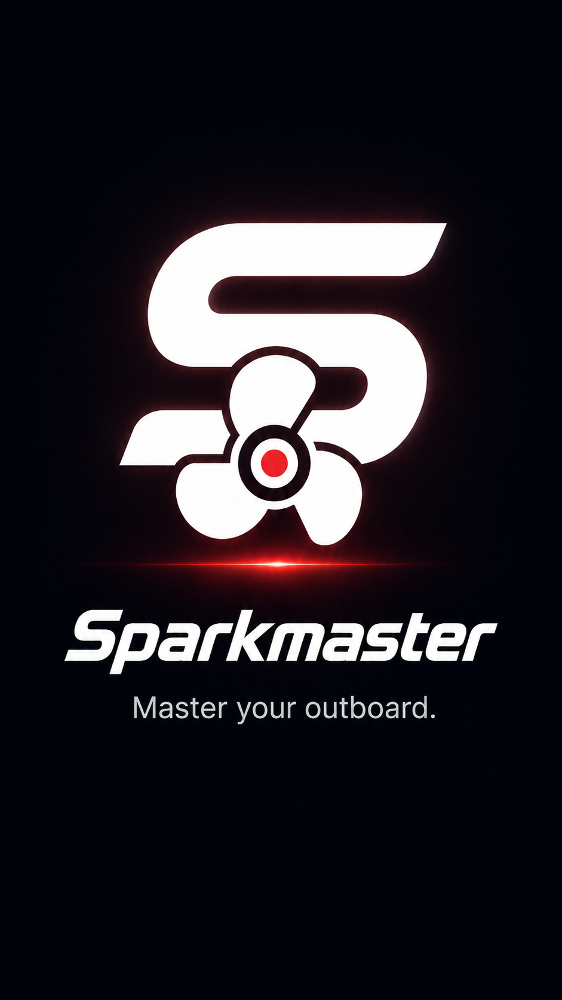

Android on Google Play · iOS later
Master your outboard.
Offline-first companion for maintenance, trips, diagnostics and tools — with experimental on-device SparkPilot in Premium.
Works without a marina Wi‑Fi. Your service records stay on your phone by default.
Built for real outboard work.
Everything you need between the workshop, the trailer and the water — without cloud lock-in.
Experimental · Beta
SparkPilot on your device.
Ask guided questions, attach a photo or sound sample, and get source-grounded suggestions — without sending engine media to an AI cloud.
- Included with Sparkmaster Premium (one subscription).
- On-device model download; inference stays local.
- Guided scan + chat for your selected engine.
- Decision support only — always verify against the official manual.
Sparkmaster Premium
Unlock the full toolkit — including experimental SparkPilot — with a single Premium plan.
Get Sparkmaster on Android.
Available on Google Play. iOS is planned later. Support: support@sparkmaster.app